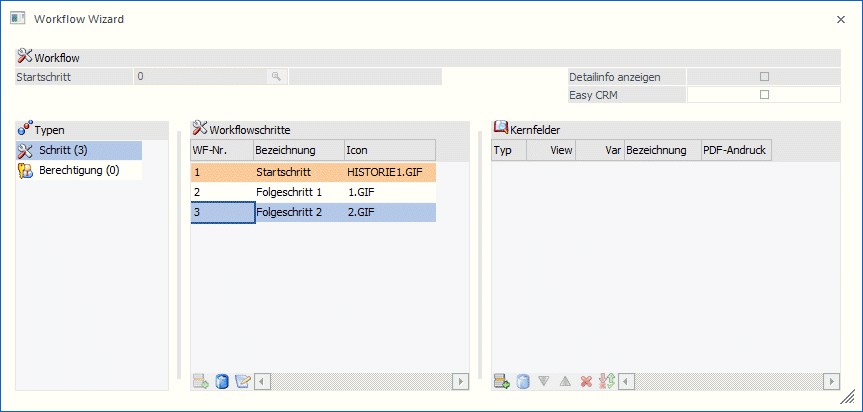
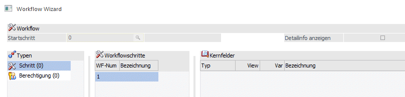
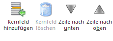
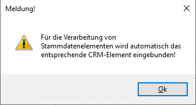
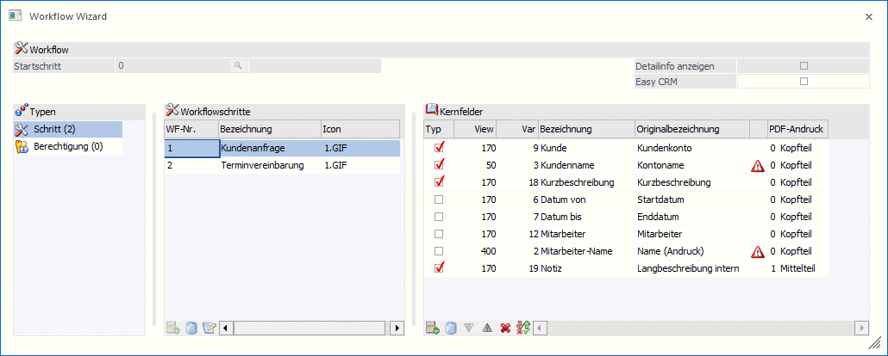
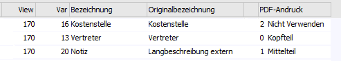
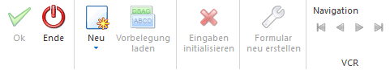
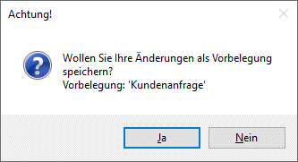

Im Modus "Neu" können neue Workflowschritte inkl. Vorlagen, zugehörige LIST-Listen, Formulare zur Darstellung des CRM-Falles und Cockpits erzeugt werden.

Bei der Neuanlage, die mit den getroffenen Einstellungen und Drücken des Ok-Buttons gestartet wird, werden folgende Punkte ausgeführt:
ü Es werden die definierten Workflowschritte mit den angegebenen Berechtigungen angelegt
ü Pro "Kernfeld-Muster" wird eine CRM-Vorlage erstellt. D.h. haben bestimmte Workflowschritte gleiche Kernfelder aktiviert, so wird für dieses "Kernfeld-Muster" eine CRM-Vorlage erstellt.
ü Es wird eine LIST-Liste (für den Startschritt) mit der Bezeichnung "Startschritt_Mandantennummer_Workflowschrittnummer" erstellt
ü Zur LIST-Liste (für den Startschritt) werden zugehörige Filter angelegt.
ü Sind in den Kernfeldern Datumsfelder definiert (mit aktiver Checkbox in der Spalte "Typ"), so werden folgende 3 Filter erzeugt:
ü Meine Vergangenen_Worfkflowstartschrittnummer
ü Meine Zukünftigen_Worfkflowstartschrittnummer
ü Name-Startschritt_Mandantennummer_Worfkflowstartschrittnummer
ü Sind in den Kernfeldern keine Datumsfelder definiert, so werden folgende 3 Filter erzeugt:
ü Meine offenen Fälle_Worfkflowstartschrittnummer
ü Alle abgeschlossenen Fälle_Worfkflowstartschrittnummer
ü Name-Startschritt_Mandantennummer_Worfkflowstartschrittnummer
ü Es wird zur Fallansicht ein Hauptformular erzeugt
ü Es wird zur Darstellung der Folgeschritte jeweils ein Subformular erstellt. Sollten auch hier so genannte Kernfeld-Muster pro Folgeschritte gleich sein, so wird hierfür immer nur ein Subformular erstellt.
ü Zum Startschritt wird ein eigenes Cockpit erstellt. Darin enthalten sind die Kacheln auf den Startschritt sowie auf die zugehörigen LIST-Auswertungen.
Zu den angeführten Punkten werden folgende Objektberechtigungen vergeben:
ü CRM-Vorlage/indiv. Formular: jene Benutzergruppen die im Bereich Berechtigungen zum Workflow angegeben sind, erhalten die Berechtigung "Lesen".
ü LIST-Liste / Filter: jener Benutzer der den Workflow erstellt, bekommt die Objektberechtigung "Ersteller".
ü Cockpit: jener Benutzer der den Workflow erstellt, bekommt die Objektberechtigung "Ersteller".
Ø Startschritt
Im Modus "Neu" nicht aktiv.
Ø Detailinfo anzeigen
Im Modus "Neu" nicht aktiv.
Zur Neuanlage von CRM-Schritten muss in der Ribbonleiste der Modus "Neu" gewählt werden.
Dadurch wird der Focus in die Tabelle der Workflowschritte gesetzt und es kann damit begonnen werden, die Workflowschritte zu benennen.

Der Name des Workflowschrittes wird im Feld "Bezeichnung" angegeben. Für weitere Workflowschritte (Folgeschritte) muss die nächste freie Zeile angewählt werden.
Die Nummerierung der Workflowschritte erfolgt hochzählend. Erst beim Speichern (OK-Button) wird die eigentliche Schrittnummer vergeben.
Wird keine Bezeichnung angegeben, so wird automatisch der Eintrag "Startschritt" (=erster Eintrag) bzw. "Folgeschritt_x" vergeben.
Sobald mind. ein Workflowschritt angegeben wurde, können im Objekttyp "Berechtigung" die entsprechenden Gruppen hinterlegt werden. Dazu muss dieser Bereich angewählt, und der der Button "Objekt hinzufügen" gedrückt werden.
Ø Kernfelder
Zum Hinzufügen von Kernfeldern in der Tabelle auf der rechten Seite muss der Focus im Objekttyp "Schritt" stehen, bzw. in der Tabelle mit den Kernfeldern. Dadurch wird der Button "Kernfeld hinzufügen" aktiv.

Ø Kernfeld hinzufügen
Durch Anwählen dieses Buttons wird der "Kernfelder-Matchcode" geöffnet und die benötigten Felder können mittels Doppelklick übernommen werden.
Hinweis
Werden Felder aus div. Stammdatenbereichen eingefügt und ist das zugehörige CRM-Element als Kernfeld noch nicht vorhanden, so wird dies mit einer entsprechenden Meldung angezeigt, und das CRM-Element eingefügt.
D.h. z.B.: wird das Feld "Kontoname" (Variable 50/3) versucht einzufügen, und ist das CRM-Element "Kundenkonto (Variable 170/9) noch nicht enthalten, so erfolgt die Meldung und beide Felder werden eingefügt:

Im Zuge des Hinzufügens eines Kernfeldes können weitere Definitionen getroffen werden.

ü Typ
Diese Option ist bei neu
eingefügten Kernfeldern immer aktiv, kann jedoch (pro Schritt)
deaktiviert/aktiviert werden. Die aktivierte Option bedeutet, dass dieses Feld
in den anzulegenden Vorlagen, Listen und Formularen verwendet wird.
ü Bezeichnung
Im Feld
"Bezeichnung" kann die angezeigte "Originalbezeichnung" indiv. angepasst
werden.
Hinweis
über die rechte Maustaste und der Funktion "Spalten anzeigen/verstecken" kann die Spalte "Originalbezeichnung" eingeblendet werden.
ü Warnung / Hinweis
In dieser
Spalte wird mittels eigenem Symbol angezeigt, dass ein Kernfeld nicht in einer
Vorlage verwendet werden kann. Mittels Doppelklick auf dieses Symbol wird ein
weiterer Hinweis dazu gezeigt.
ü PDF-Andruck
Durch Auswahl des
entsprechenden Eintrages kann festgelegt werden, ob der Inhalt des Feldes in der
Fallansicht im Kopfteil, im Mittelteil, oder nicht verwendet werden soll.

Ø Kernfeld löschen
Um ein Kernfeld wieder zu entfernen, muss die Checkbox "Typ" deaktiviert werden (in allen Schritten in denen sie aktiviert ist). Anschließend kann der Button angewählt werden.
Ø Zeile nach unten / Zeile nach oben
Mittels dieser Buttons kann die Position der Kernfelder in der Tabelle verändert werden.
Ø Alle Zeilen deaktivieren / Selektion umkehren
Mittels dieser Buttons können die Checkboxen der Kernfelder deaktiviert werden, bzw. die Selektion umgekehrt werden.
Buttons

Ø Ok
Im Modus "Neu" wird dieser Button aktiv, sobald mindestens ein CRM-Schritt sowie ein Kernfeld hinzugefügt wurde. Ist dies der Fall und wird der Button gedrückt, so werden die CRM-Schritte inkl. aller zugehöriger Objekte angelegt bzw. gespeichert. Das System wechselt anschließend in den "Bearbeiten"-Modus.
Ø Ende
Durch Anwählen des Ende-Buttons wird der Menüpunkt geschlossen.
Wurde in der Definition bereits mind. ein Workflowschritt inkl. Kernfeld gewählt, so besteht beim Schließen des Menüpunktes die Möglichkeit, die getätigten Einstellungen als Vorbelegung (für den aktuellen Benutzer) zu speichern.

Besteht dazu bereits eine entsprechende Vorbelegung, so wird diese aktualisiert, im anderen Fall neu angelegt.
Ø Bearbeiten / Neu / Export / Import / Kopieren
Auswahl des gewünschten Modus
Ø Vorbelegung laden
Dieser Button ist im Modus "Neu" aktiv, wenn es bereits gespeicherte Vorbelegungen für den aktuellen Benutzer gibt. Wird der Button gedrückt, so werden die vorhandenen Vorbelegungen in einer Auflistung zur Übernahme bereitgestellt.
Ø Eingaben initialisieren
Im Modus "Neu" nicht aktiv.
Ø Formular neu erstellen
Im Modus "Neu" nicht aktiv.
Ø VCR-Buttons
Im Modus "Neu" nicht aktiv.
Tabellenbuttons

Ø Objekt hinzufügen
Wurde ein Workflowschritt festgelegt, so können im Objekttyp "Berechtigung" (= Objekte) hinzugefügt werden. Dabei wird der Berechtigung-Matchcode geöffnet aus dem die erforderlichen Berechtigungen mittels Doppelklick übernommen werden können.
Ø Objekt löschen
Wurde ein Objekt, in diesem Fall eine "Berechtigte Gruppe", hinzugefügt, so kann diese mittels Button "Objekt löschen" wieder entfernt werden.
Ø Objekt bearbeiten
Im Modus "Neu" nicht aktiv.
Ø Ausgabe Excel
Durch Anwahl des Buttons "Ausgabe Excel" wird der Inhalt der Tabelle nach Microsoft Excel übergeben.
Ø Tabelleneinstellungen speichern
Die Spalten einer Tabelle können grundsätzlich an beliebige Positionen verschoben, bzw. in der Breite entsprechend angepasst werden. Durch Anwahl des Buttons "Tabelleneinstellungen speichern" werden die Einstellungen benutzerspezifisch gespeichert und bei dem nächsten Aufruf des Programmpunktes wieder vorgeschlagen.
Ø Gesamteinstellungen speichern…
Im Gegensatz zu "Tabelleneinstellungen speichern" können mit "Gesamteinstellungen speichern" mehrere Tabellenaufbauten gespeichert und nach Wunsch geladen werden. Zusätzlich werden Sonderfunktionen der Tabelle (z.B. "Spalte gruppieren") ebenfalls bei der Speicherung bedacht.